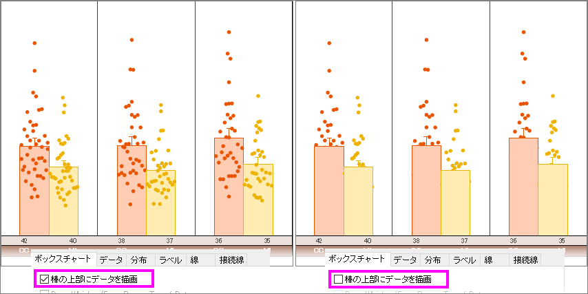

FAQ-317 統計グラフのボックスチャートや棒グラフ上にデータを表示するにはどのようにしたらよいでしょうか？
Draw-Data-on-Top-of-Box
最終更新日：2020/01/03
グラフの種類がボックス+点列 重複または棒+点列 重複のとき、データを強制的にボックスまたは棒の前面に表示させることができます。
- プロットをダブルクリックして、作図の詳細ダイアログを開きます。
- ボックスチャートタブを開き、ボックス/棒の上部にデータを描画にチェックを入れます。
- 
キーワード：ボックスチャート, 棒グラフ, データを前面に表示, ボックス+点列 重複, 棒+点列 重複